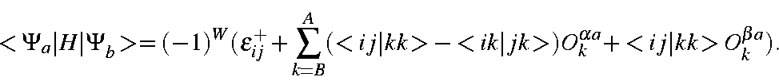
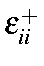
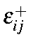
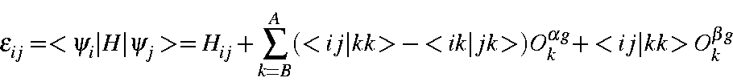
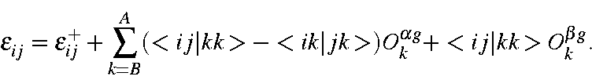
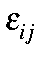
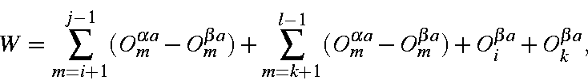
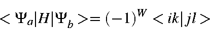

| = | 
|
|
 |
 = (-1)^W(\epsilon_{ij}^++\sum_{k=B...
...t kk>-)O_k^{\alpha a}
+O_k^{\beta a}).
\end{displaymath}">
This presents a problem. Unlike , which has already been defined, there is no easy way to calculate . Rather than undertake this calculation, use can be made of the fact that, for the starting configuration:
 = H_{ij} +
\sum_{...
...t kk>-)O_k^{\alpha g}
+O_k^{\beta g}
\end{displaymath}">
or
-)O_k^{\alpha g}
+O_k^{\beta g} .
\end{displaymath}">
 corresponds to an off-diagonal term in the Fock matrix, which at self-consistency is, by definition, zero. Therefore:

which can be substituted directly into the expression for

All that remains is to determine the phase factor. One of the microstates is permuted until the two unmatched M.O.s occupy the same position. The number of permutations needed to do this when the two M.O.s are of

assuming j > i; otherwise:

- (a) All four M.O.s are of the same spin. The
interaction energy is
![\begin{displaymath}<\Psi_a\vert H\vert\Psi_b> = (-1)^W[<ik\vert jl>-<il\vert jk>],
\end{displaymath}](img912.gif)
in which the phase factor is:

if the four M.O.s are of α spin; otherwise,

- (b) Two M.O.s are of each spin. In this case there is no exchange integral, therefore the interaction energy is
 = (-1)^W
and the phase factor is:

If i > k, then ,
if j > l, then
,
if j > l, then
 ,
finally, if i > k and j > l or i < k and j < l, then W=W+1.
,
finally, if i > k and j > l or i < k and j < l, then W=W+1.
All other matrix elements are zero. The completed secular determinant is then diagonalized. This yields the state vectors and state energies, relative to the starting configuration. In turn, the state vectors can be used to generate spin density (at the RHF level) for pure spin states. If the density matrix for the state is of interest, such as in the calculation of transition dipoles for vibrational modes of excited or open shell systems, or for other use, the perturbed density matrix is reconstructed.
- (b) Two M.O.s are of each spin. In this case there is no exchange integral, therefore the interaction energy is